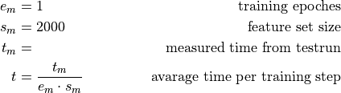
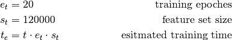
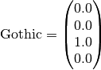
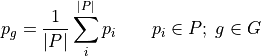

MusicAI¶
MusicAI uses a Convolutional Deep Neural Network (CDNN) to categorize music by its main genre.
External Dependencies¶
MusicAI is using the TensorFlow library. In detail, it uses the high level API TFLearn. With TensorFlow comes a tool called TensorBoard that provides detail about the model and training process and progress. To access the data of the MusicAIs neural network via TensorBoard, the following command must be executed. Paths are depending on the MusicDB configuration.
tensorboard --logdir /data/musicdb/musicai/log
After starting tensorboard, the data can be accessed using a web browser.
The tool prints the port number to stdout.
Training Time¶
The training time of the API depends on the used hardware (GPU recommended!). To estimate the time the training needs this section may help you.
First of all a test run must be done to get a basic time estimation of a small training session. After the run, the time used for the training gets printed to the screen.

The real time the full training will take can be calculated with e and s as they will be used then.

On my workstation, it took 39:52 hours to train the network with 176433 features from 2138 songs in 20 epochs.
- CPU: Intel i7-5930K CPU @ 3.50GHz
- GPU: nVidia GeForce GTX 1070 (8GiB)
- RAM: Kingston HyperX Savage DDR4-Speicher 3000MHz (16GiB)
- SSD: Samsung 950 Pro M.2
Removing an old model¶
To remove an old model the following steps are needed, with modelpath and logpath as set in the MusicDB Configuration.
rm $modelpath/*
rm -r $logpath/*
Data Handling¶
For training the CDNN, a lot of data is needed. In my case, it is over 16GiB of input data. This cannot be handled using only a sqlite3 database from that all data gets loaded into a python list object.
So for training and the training data, the h5py library is used and the data gets stored in a HDF5 file.
In context of MusicDB, use the lib.hdf5storage.HDF5Storage class.
There are two categories of files:
- The Featureset:
- This is a file for each song named
$spectrogrampath/$SongID.h5. This file contains the features itself and nothing more.- The Trainingset:
- This is a much larger file named
$modelpath/$AIName.h5containing lots of features and its annotation.
Featureset¶
This file has only one dataset called featureset. It is stored in the same directory the spectrogram images are stored.
The dimension of the featureset is (x, slicesize, slicesize, 1).
With x as the amount of features in the featureset,
and slicesize the configured size of spectrogram-slices used to create the feature.
The additional dimension is needed by TensorFlow
Trainingset¶
This file is organized as follows
- inputs: input feature set (
chunksize=(1024,128,128,1))- outputs: output vectors (categories) (
chunksize=(1024,4,1))- songids: list of all song IDs thats features are in the featureset
The songids can be used to check whether a song is included in the training set or not.
MusicAI Module¶
MusicAI is made to set genre tags to songs based on the tags set to albums.
This AI works for on a predefined set of genre.
This set can be defined in the MusicDB Configuration [MusicAI]->genrelist.
The list is bound to the model name also set in the configuration.
If the gerelist changes, the model name should change, too.
Otherwise the datasets loose their relation to the genres.
This module changes two environment variables:
TF_CPP_MIN_LOG_LEVELwill be set to2to suppress printing warnings.CUDA_VISIBLE_DEVICESwill be set to0. This is the GPU ID that will be used by TensorFlow.
MusicAI Class¶
-
class
mdbapi.musicai.MusicAI(config)[source]¶ Parameters: config – Instance of lib.cfg.musicdb.MusicDBConfig.Raises: TypeError– If config is of an invalid type-
AddSongToTrainingset(songid, genre)[source]¶ This method can be used to add a song to the available training sets. To do so, first the feature set must be created.
The feature set file gets read and a genre vector generated. The resultuing two sets (inputs = feature set and outputs = genre vector) will be stored in the training file.
The inputs are a HDF5 dataset handler shaping a numpy-array of size n of input matrices:
(n, slicesize, slicesize, 1)The outputs are a HDF5 dataset handler shaping a numpy-array of size n of genre-vectors formatted as shown in
mdbapi.musicai.MusicAI.GetGenreMatrix():(n, 4, 1)The genre name should be the same as the related genre tag is named in the database. It also must be part of the list of genres this AI works with.
Parameters: - songid – ID of the song that shall be used for training
- genre (str) – Lower case name of the genre (as stored in the database) the song belongs to
Returns: Trueif the song has a feature set so that it was added to the database. OtherwiseFalseExample
musicai = MusicAI("./musicdb.ini") musicai.CreateFeatureset(mdbsong["id"], mdbsong["path"]): musicai.AddSongToTrainingset(mdbsong["id"], "metal")
-
CreateFeatureset(songid, songpath)[source]¶ This function generates the feature set for the MusicAI. The features are generated by the following steps:
- First step is to create the spectrogram calling
CreateSpectrogram(). - Next it takes slices from the resulting image and converts it into a normalized numpy array.
- The begin and end of a song will be chopped of and gets ignored.
A slicesize can be defind in the MusicDB Configuration under musicai->slicesize. Be careful with this configuration and check the influence to other methods in this class! The first 10 and the last 10 slices will be skipped to avoid unnecessary much intro/outro-data-noise.
The resulting data (a feature) is a numpy 3D (slicesize, slicesize, 1) matrix of type float in range of 0.0 to 1.0. This matrix of all features of a song gets stored in a HDF5 file under
$spectrograms/$SongID.h5Parameters: - songid – ID of the song the feature set belongs to
- songpath (str) – path to the song that shall be analyzed
Returns: Trueon success, otherwiseFalseExample
musicai = MusicAI("./musicdb.ini") musicai.CreateFeatureset(mdbsong["id"], mdbsong["path"]):
- First step is to create the spectrogram calling
-
CreateModel()[source]¶ This method creates and returns the following deep convolutional neural network.
The architecture of the network is close to the one provided the following blog article:
Julien Despois, “Finding the genre of a song with Deep Learning – A.I. Odyyssey part. 1”, Nov. 2016, internet (non-scientific source), https://chatbotslife.com/finding-the-genre-of-a-song-with-deep-learning-da8f59a61194Inside the method there are some configurable variables to easily change some basic settings of the network:
useflatten = True: Create a flatten-layer between the convolutional part and the fully connected endkeepprob = 0.5: Probability of an input gets propagated through the dropout-layeractivation = "elu": Name of the activation function used for the convolutional networks as used by tensorflowweightinit = "Xavier": Initialisation function for the convolutional layersweightdecay = 0.001learningrate = 0.001
The reason for using
"elu"as activation function can be found in the following paper:Djork-Arné Clevert, Thomas Unterthiner and Sepp Hochreiter, “Fast and Accurate Deep Network Learning by Exponential Linear Units (ELUs)”, Nov. 2015, CoRR (scientific source), https://arxiv.org/abs/1511.07289Returns: The created TFLearn-model
-
CreateSpectrogram(songid, songpath)[source]¶ This method creates the spectrograms used for the feature set. If the spectrogram already exists, it will skip the process. The spectrogram is a png-image.
Warning
This method must be thread safe to process multiple files at once
This method represents the following shell commands:
# decode song to wave-file ffmpeg -v quiet -y -i $songpath "$songid-stereo.wav" # make mono wave file out of the stereo wave file sox "$songid-stereo.wav" "$songid-mono.wav" remix 1,2 # create spectrogram out of the mono wave file sox "$songid-mono.wav" -n spectrogram -y $slizesize -X 50 -m -r -o "$songid.png"
The temporary wave files are stored in the musicai-tmppath. They will be removed if the spectrogram was created successfully. Otherwise they will be kept. The spectrogram in the musicai-specpath. The slicesize denotes the height of the spectrogram which basically means the granularity of frequencies. This value gets increased by 1 to cover the offset (f=0). One column in the spectrogram represents 50ms of the song. All those variables can be set in the MusicDB Configuration.
Warning
Before changing the slice-size read the
soxmanpages for the-yparameter carefully.Parameters: - songid – The song ID is used to create temporary files
- songpath (str) – The path to the song that shall be analyzed
Returns: path to the spectrogram
-
GetGenreMatrix()[source]¶ This method returns a dictionary with the categorization vector for each genre. When training a neural network for categorizing, each element of the result-vector is mapped to one category. This static mapping is returned by this method. The matrix gets dynamic generated out of the configuration of MusicDB. The configured genre list gets just transformed into the matirx.
For example, the mapping for the genrelist
Metal, NDH, Gothic, Electoris the following:The format of the mapping is a dictionary with each genre as key. Each entry in the dictionary is a vector with the related cell set to 1.0 and the other cells to 0.0. For Gothic music, the vector would look like this:

Returns: A dictionary with expected-prediction-vectors for training
-
GetStatistics()[source]¶ This method returns statistics of the sizes of the training and feature sets.
Returns: A dictionary with statistics or Noneif there is no training setExample
stats = musicai.GetStatistics() print("Set Size: ", stats["setsize"]) print("Number of Songs in Set: ", stats["numofsongs"])
-
HasFeatureset(songid)[source]¶ This method checks if a song has already a feature set. If there is a HDF5 file in the spectrogram directors the method assumes that this file contains the feature set. The file gets not read. The png encoded spectrogram is not the final feature set and so its existence is not relevant for this method.
Parameters: songid – ID of the song that shall be checked Returns: Trueif the songs feature set is available, otherwiseFalse
-
HasTrainingset(songid)[source]¶ This method checks if a song is used for training - if there exists a training set. The check is done in two steps:
- Does the training set file for the model exist.
- Is the song ID listed in the set of training songs in the training set file.
Parameters: songid – ID of the song that shall be checked Returns: Trueif there exists a training set, otherwiseFalse
-
LoadModel(modelfilepath)[source]¶ This method creates a neural network model and loads the trained data from the model in
modelfilepathif the filemodelfilepath + ".index"exists. The model will be created to run on the GPU if the related configuration is set toTrue, otherwise the model will run on the CPU. Currently only/gpu:0and/cpu:0are supported. This method also resets TensorFlows and TFLearn internals by callingtensorflow.reset_default_graph()andtflearn.config.init_graph(). The model can then be saved bySaveModel()If model creation fails, an exception gets raised.
Warning
The model data can become invalid if the code for creating the model (
CreateModel()) changes the architecture of the model.Parameters: modelfilepath (str) – Path where the models data are stored Returns: The TFLearn-model Raises: tensorflow.errors.InternalError– When creating the model failes.
-
PerformPrediction(songid)[source]¶ This method starts a prediction of the genre for a song addressed by its song ID. It returns a vector of confidence for the genres as described in
GetGenreMatrix(). The confidence is the average of all features in the set. The featureset gets loaded from the related HDF5 file in the spectrogram directory configured in the MusicDB Configuration. A feature set can be created using theCreateFeatureset()If the file does not existNonegets returned.The result is calculated the following way from the set P of predictions based on a feature for each genre in the set of genres G.

Parameters: songid – The ID of the song that shall be categorized Returns: A confidence-vector for the genres that were predicted, or Noneif an error occursExample
# Create a feature set if there is none yet if not musicai.HasFeatureset(mdbsong["id"]): musicai.CreateFeatureset(mdbsong["id"], mdbsong["path"]) # Perform prediction confidence = musicai.PerformPrediction(mdbsong["id"]) if confidence == None: print("Prediction Failed! No featureset available?") return # Print results # The order of the Genre-List is important! The mapping (index, genre) must be correct! for index, genre in enumerate(config.musicai.genrelist): print("%.2f: %s" % (confidence[index], genre))
-
PerformTraining()[source]¶ This method performs the training of the neural network. The training is done in several steps:
- Loading the model using
LoadModel() - Loading the training set from file
- Performing the training itself. This can be canceled by pressing ctrl-c.
- Saving new model state by calling
SaveModel()
The size of the training set is determined by the MusicDB Configuration.
Each run gets logged in the log-directory that can be configured in the MusicDB Configuration. The name of each run is the module-name extended with the date (YY-MM-DD) and time (HH:MM) of the training. These logs can be used for visualization using TensorBoard.
Returns: Trueon success, otherwiseFalse- Loading the model using
-
SaveModel(model, modelfilepath)[source]¶ This method stores the configuration (weights, biases, …) in
modelfilepath. TFLearn creates multiple files withmodelfilepathas suffix.The model can then be loaded by
LoadModel()Warning
The model data can become invalid if the code for creating the model (
CreateModel()) changes the architecture of the model.Parameters: - model – The TFLearn model of the neural network
- modelfilepath (str) – The path and filename-(prefix) where the data of the model will be saved
Returns: Nothing
-